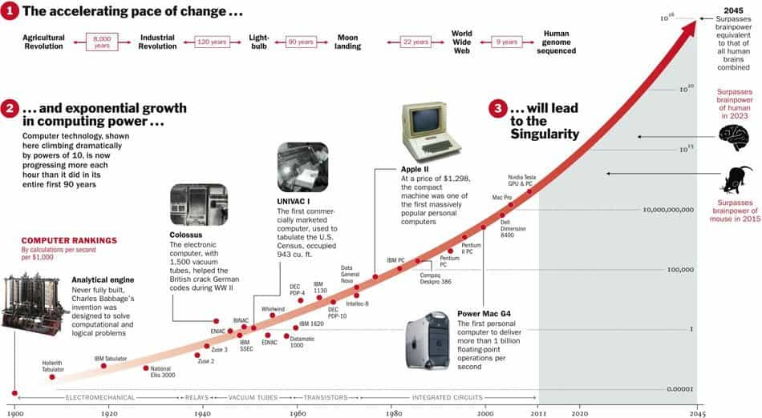

Thomas Hobbes is an Australian uni student hiding out in his mother's basement waiting for the singularity to arrive. As a backup plan he is secretly hoping to avoid the perils of an actual career by becoming a writer and travelling the world.


Now that the 2012 phenomenon is behind us, perhaps its time to pause, take a breath, and ask the question—why were so many people so willingly duped? What is the cause of this mass hysteria? If the (relatively) educated people of 2012 can take such nonsense seriously, then has this happened before?
A quick reading of history will tell you that people have always thought, nay – hoped! The world was ending. Wikipedia has a list of more than a hundred examples. Some of the more notable ones include –
70AD – A Jewish sect sees their revolt against the Romans as the Battle of Armageddon

375-400AD – The Bishop of Tours declares that “there is no doubt the anti-christ has already been born” and that the rapture would occur by century’s end
January 1st 1000AD – Various christian leaders, including the Pope, pin their hopes on this nice round number. Riots ensue across Europe
1348 – The Black Plague is seen as a sure sign of the apocalypse
Feburary 1st 1524 – Astrologers predict the world will end from a flood starting in London. 20,000 people leave their homes for higher ground in anticipation
April 5th 1534 – An Anabaptist preacher predicts that only the city of Münster would be spared
1600 – Martin Luther has a wild stab
February 1st 1624 – The London astrologers try again. Presumably, they give up after this point
May 19th 1780 – A combination of fog and forest fires panics the Connecticut General Assembly into thinking the day of judgement is occurring. Members debate whether or not there should be an adjournment
1806 – A hen in England begins laying eggs on which the phrase “Christ is Coming” is written. Eventually revealed as a hoax
December 25th 1814 – A woman claims to be pregnant with the “Christ child”. After her death, an autopsy finds she was not pregnant
October 22nd 1844 – The “Great Disappointment”. Hundreds of thousands of Americans eagerly await the second coming of Christ. Afterwards most begin rebuilding their lives. The remainder become Jehovah’s Witnesses
1850s – Some consider the Crimean War to be the Battle of Armageddon

1910 – An astronomer predicts gases from Halley’s Comet would “snuff out all life on the planet”. Peddlers start selling “comet pills”
1941 – The Jehovah’s Witnesses have their own “great disappointment”
December 21st 1954 – UFOs are supposed to destroy the world
1975 – The Jehovah’s Witnesses have another crack
1988 – The book “88 Reasons Why the Rapture Will Be in 1988” sells five million copies
1991 – Leaders of the “Nation of Islam” declare the Gulf War to be the Battle of Armageddon
December 17th 1996 – A California psychic predicts the world will end with the arrival of “sixteen million spaceships”
March 26th 1997 – 39 members of the Heaven’s Gate cult commit suicide upon the approach of comet Hale-Bopp
January 1st 2000 – The Y2K bug
May 21st 2011 – Evangelical radio broadcaster Harold Camping predicts the rapture will occur. Shortly afterwards, he suffers a stroke instead
December 21st 2012 – End of the Mayan Calendar

So why is this? Why are people apparently so terrified of the world ending?
I don’t think people truly do fear the world ending. In fact they fear the opposite—that it won’t end in their lifetimes.
They fear that, when all is said and done, there was nothing to really distinguish their generation. They will be just another anonymous chapter in human history, rather than host to the grand finale. They would literally prefer that the world end rather than let their children take it over and forget them.
Human beings are selfish bastards.
Most of the conventional ways you’ve heard of the world ending are mostly or entirely bullshit.
Even the original apocalypse, nuclear weapons, falls far short of what was promised. There are simply not enough nuclear warheads to destroy every major city on Earth. Even in the 1980s, when the global arsenal reached its height, estimates were that 400-500 million might die in a first strike and perhaps double this number in total from famines, plagues, and radiation. However, the vast majority of humanity would survive.
The same goes with any other method. Pandemics? We have them all the time, but not once in four billion years has a disease mutated to the point it could wipe out every living creature on Earth. Solar Flare? Perfectly possible, but even by knocking out every electrical device on the planet the worst thing you’d do is set the economy back a few decades.
Asteroid strike? We only get a dinosaur killer about every ten million years, and are probably at the point by now we could spot and deflect it far enough in advance. Supernova explosion? There are no massive stars close enough to harm us, and even the foreboding “gamma ray burst” doesn’t effect us more than once about every five million years.
Sucked into a black hole? The nearest observed one is nearly eight thousand light years away. Alien invasion? Well sure, but again, the Earth has been sitting here, apparently unmolested, for at least four billion years. The remaining possibility is if we somehow trigger it, like in 2001 or The Day the Earth Stood Still.
As far as I can figure it, there are only two possible, imminent, existential threats to humanity: runaway nanotechnology and a technological singularity. Both are related.
While we know a naturally evolved virus wouldn’t be virulent enough to kill us, engineering such a virus may be possible. Already, someone had the brilliant idea of posting the ebola genome online, though the average person doesn’t yet own a 3-D printer capable of replicating it.
Indeed, with a well-designed virus, you could probably crash the whole ecosystem, as has often been depicted in science fiction. This threat remains until humanity has a permanent, sustainable presence in space, i.e. a self-sufficient base on Mars housing a few hundred people. While the space program has been stalled for decades, I think we will have such a backup by 2100.
Concerning nanotechnology, what we’re really talking about is the dreaded “grey goo” scenario. Nanobots have often been depicted in fiction as this unstoppable, all-consuming force against which resistance is useless. There are reasons why this may not be the case however.
Maintaining a swarm of nanobots poses enormous challenges. Where do they get their power source? How do they communicate with each other? How do they sense the world around them? How do they store the design plans to make more copies of themselves? The word “nanobot” might as well be “pixie dust” these days. In fact to correct it, we ought to rename them.
Combating nanobots would be much like fighting any regular kind of plague. Your primary weapons are heat and isolation. By definition nanobots would be tiny. They would have a very large surface area to volume ratio. Even the most extreme heat resistant bacteria can only withstand temperatures up to 122 degrees Celsius. We might be able to increase this somewhat, but every element has a melting point.
Basically, if you heat something enough, or deprive it of energy, it will die. If you’re facing a plague of nanobots – get out the glass beakers and flamethrowers.

This is the real big one. It is the only threat to our existence I would take completely seriously.
The idea of the singularity comes from the observation that computers have doubled in power roughly every 18 months since the 1950s. If this trend continues, we will eventually reach an “escape velocity” where computers grow exponentially, surpassing all human comprehension. Proponents like Ray Kurzweil say this could occur before 2050.
Even then, there are arguments for why a singularity may not occur. Moore’s law is not a “law” after all, but just an observation. Someday soon we’re going to run up against the molecular barrier, and what indication is there that our CPUs will attain “sentience” before then?
The desktop computers of today are thousands of times more powerful than they were twenty years ago and we’re still using them to type word documents and watch porn. Our machines are still so primitive there’s little risk of a “robot revolt” just yet.
You can also make a decent argument that technology is not accelerating, but in fact slowing. I’d argue the world changed more between 1900 and 1950 than 1950 and 2000. We’re still flying the same planes we were forty years ago, and we have only discovered one new type of antibiotic in the last thirty years.
Cars, ships, trains, household appliances, weapons of war…the key breakthroughs were all fifty or a hundred years ago. Aside from computers, we’ve made few real leaps since the 70s.
I think if you were to jump forward in time a hundred years, you’d see a world much as it is today. Yes, incredibly advanced computers and nanotechnology may be around, but just as there are still Amish communities today, I don’t think they’ll be any shortage of regular people. We’ll still be eating and shitting and jerking off as our species has been doing for the past one hundred thousand years. The Pyramids will still be standing, and there will still be beaches and rivers and other nice things to enjoy.
So relax, take a drink, and enjoy the likelihood that there will still be a relatively normal world for your grandchildren and great-grandchildren to inhabit in a hundred years.
Read More: A Great Date Idea That You May Not Have Thought Of
{kind=link}
{kind=link}
{kind=link}